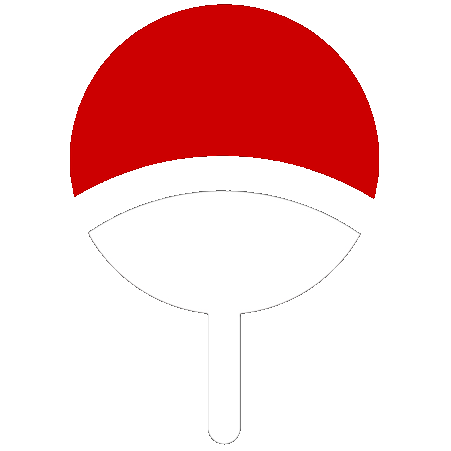

<!DOCTYPE html>
<html>

<head>
	<title>Mugen Tsukuyomi</title>
	<!-- for-mobile-apps -->
	<meta name="theme-color" content="rgba(255, 0, 0, 0.7)">
	<meta name="viewport" content="width=device-width, initial-scale=1">
	<meta http-equiv="Content-Type" content="text/html; charset=utf-8" />
	<meta name="keywords" content="Naruto web template, Bootstrap Web Templates, Flat Web Templates, Android Compatible web template,
Smartphone Compatible web template, free webdesigns for Nokia, Samsung, LG, SonyEricsson, Motorola web design" />
	<script type="application/x-javascript">
		addEventListener("load", function() {
			setTimeout(hideURLbar, 0);
		}, false);

		function hideURLbar() {
			window.scrollTo(0, 1);
		}
	</script>
	<!-- //for-mobile-apps -->
	<link href="css/bootstrap.css" rel="stylesheet" type="text/css" media="all" />
	<link href="css/style.css" rel="stylesheet" type="text/css" media="all" />
	<link href="css/night.css" rel="stylesheet" type="text/css" media="all" />
	<!-- font-awesome icons -->
	<link href="css/font-awesome.css" rel="stylesheet">
	<!-- //font-awesome icons -->
	<!-- js -->
	<!-- <script src="js/jquery-1.11.1.min.js"></script> -->
	<script src="https://ajax.googleapis.com/ajax/libs/jquery/3.5.1/jquery.min.js"></script>
	<link rel="shortcut icon" href="images/mugen.png">
	<!-- //js -->
	<link href='//fonts.googleapis.com/css?family=Raleway:400,100,100italic,200,200italic,300,400italic,500,500italic,600,600italic,700,700italic,800,800italic,900,900italic' rel='stylesheet' type='text/css'>
	<link href='//fonts.googleapis.com/css?family=Open+Sans:400,300,300italic,400italic,600,600italic,700,700italic,800,800italic' rel='stylesheet' type='text/css'>
	<!-- start-smoth-scrolling -->
	<script type="text/javascript" src="js/move-top.js"></script>
	<script type="text/javascript" src="js/easing.js"></script>
	<script type="text/javascript">
		$(document).ready(function($) {
			$(".scroll").click(function(event) {
				event.preventDefault();
				$('html,body').animate({
					scrollTop: $(this.hash).offset().top
				}, 1000);
			});
		});
	</script>
	<!-- start-smoth-scrolling -->

	 <style type="text/css">
		body,
		html {
			height: 100%;
			margin: 0;
		}

		.bg {
			background-image: url("images/sky.jpg");
			height: 100%;
			background-position: center;
			background-repeat: no-repeat;
			background-size: cover;
		}

		.rotate {
			animation: rotation 50s infinite linear;
			margin-top: 3%;
			max-width: 200px;
			max-height: 200px;
			-webkit-box-shadow: 0px 0px 25px 6px rgba(255, 0, 0, 0.7);
			-moz-box-shadow: 0px 0px 25px 6px rgba(255, 0, 0, 0.7);
			box-shadow: 0px 0px 25px 6px rgba(255, 0, 0, 0.7);
			border-radius: 50%;
			z-index: 9;
		}

		.moon {
			margin-top: 3%;
			max-width: 220px;
			max-height: 220px;
			z-index: 8;
		}

		@keyframes rotation {
			from {
				transform: rotate(0deg);
			}

			to {
				transform: rotate(359deg);
			}
		}
	</style>

</head>

<body oncontextmenu="return false;">
  <!-- disbale right click -->

	
	<audio id="myAudio"><source src="sound/ost2.mp3" type="audio/mpeg"></audio>
	
	
	<div class="stars"></div>
	<div class="twinkling"></div>
	<div class="clouds"></div>
	<div class="clouds2"></div>

	<!-- login -->
	<div class="login bg">
		<div class="container">
			<!--  -->
			<!--  -->
		</div>
	</div>
	<!-- //login -->

	<div class="footer-copy">
			<p> <!-- Made with <i class="fa fa-heart fa-lg" style="color:#d10011;"></i> by
				<a href="http://s.id/see_udin" target="_blank" style="color:#d10011;">see_udin</a> <br> -->
				<a href="http://s.id/see_udin" target="_blank" style="color:#f0f0f0;">Develop from
					 - Dedicated for
					</a>
			</p>
		</div>
	</div>

	<!-- Bootstrap Core JavaScript -->
	<script src="js/bootstrap.min.js"></script>
	<script src="js/minicart.min.js"></script>
	<!-- main slider-banner -->
	<script src="js/skdslider.min.js"></script>
	<script src="https://unpkg.com/sweetalert/dist/sweetalert.min.js"></script>

	<script type="text/javascript">

		$(window).on('load', function(){
			 $('.loading').fadeOut();
		 });

		$(document).ready(function() {

			// swal("Genjutsu!", "Click the moon to activate Mugen Tsukuyomi!", "warning");
			swal("Genjutsu!", "Touch the moon to activate Mugen Tsukuyomi!", "warning");

		/* disable Right Click F12 Ctrl + Shift + I Ctrl + Shift + J Ctrl + U */
    document.onkeydown = function(e) {
      if (event.keyCode == 123) {
        return false;
      }
      if (e.ctrlKey && e.shiftKey && e.keyCode == 'I'.charCodeAt(0)) {
        return false;
      }
      if (e.ctrlKey && e.shiftKey && e.keyCode == 'J'.charCodeAt(0)) {
        return false;
      }
      if (e.ctrlKey && e.keyCode == 'U'.charCodeAt(0)) {
        return false;
      }
    }

			$('.bulan-merah').hide();
			$('.clouds2').hide();
			var audio = document.getElementById("myAudio");

			// for user google chrome click first
			$(".clouds").click(function(){
					audio.play();

					// show mugen tsukoyomi
					setTimeout(function() {
						$('.bulan').hide();
						$('.bulan-merah').fadeIn(3000);
						$('.clouds').hide();
						$('.clouds2').fadeIn(3000);
					}, 1000);

					// hide mugen tsukoyomi after end music
					audio.onended = function() {
							$('.bulan').fadeIn(3000);
							$('.bulan-merah').hide();
							$('.clouds').fadeIn(3000);
							$('.clouds2').hide();
					};

			});

			$(".bulan-merah").click(function(){
					audio.pause();
					audio.currentTime = 0;

					$('.bulan').fadeIn(3000);
					$('.bulan-merah').hide();
					$('.clouds').fadeIn(3000);
					$('.clouds2').hide();

			});

			/* get audio source
			var audio  = document.createElement("audio");
			audio.src  = "sound/ost.mp3";

			// autoplay audio setalah 2 detik
			setTimeout(function() {
					audio.play();
				}, 2000);

			// show mugen tsukoyomi
			setTimeout(function() {
				$('.bulan').hide();
				$('.bulan-merah').show();
				$('.clouds').hide();
				$('.clouds2').show();
			}, 5000);

			// hide mugen tsukoyomi after end music
			setTimeout(function() {
				$('.bulan').show();
				$('.bulan-merah').hide();
				$('.clouds').show();
				$('.clouds2').hide();
			}, 126600); */

		});
	</script>

</body>

</html>
